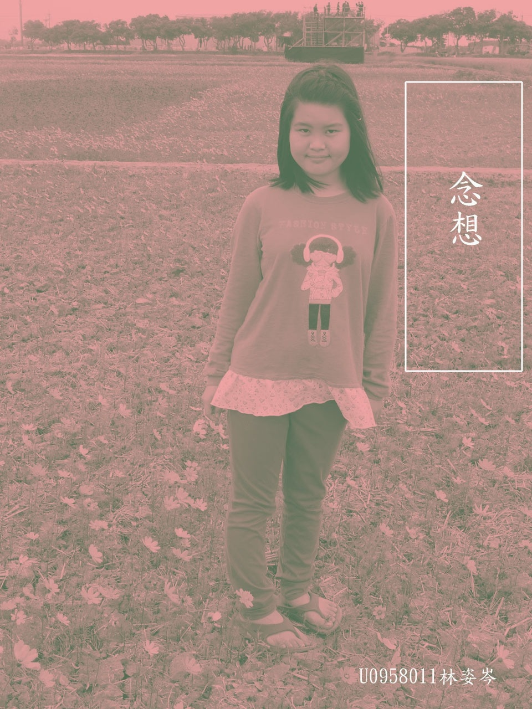
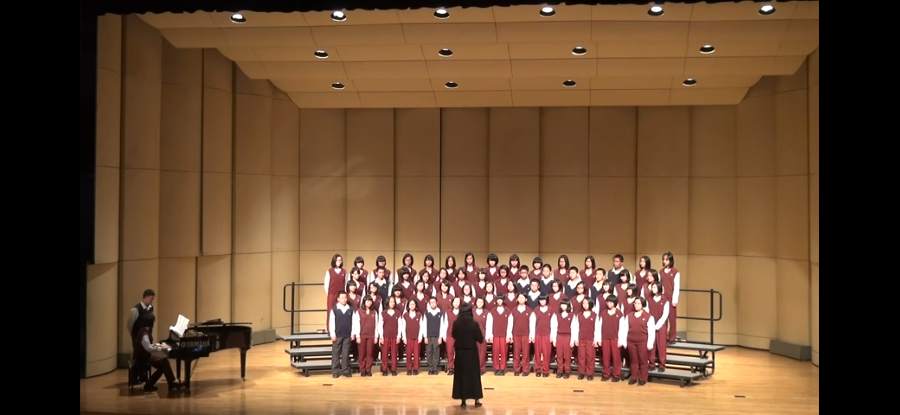

自我介紹 自我介紹:我是林姿岑，生於雲林，興趣聽音樂、唱歌、追劇，專長顧小孩，個性樂觀、開朗、獨立、樂於助人。 個人簡歷 現職 學生 學校 聯合大學 文化創意與數位行銷學系學系 出生地雲林 偶像張杰 興趣聽音樂、追劇、唱歌 人格特質孝順、謹慎、勇於冒險 實習經驗超思維教育補習班打工 語言英文、台語 個人作品集 林姿岑歷年作品 製作手工香皂 卓也藍染 體驗拔芋頭 淵明國中合唱團 作品  雙色調 雙色調 置換天空 置換天空 抽色 抽色  合唱團 淵明國中合唱團 二部 團員 國一、國二